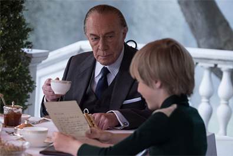
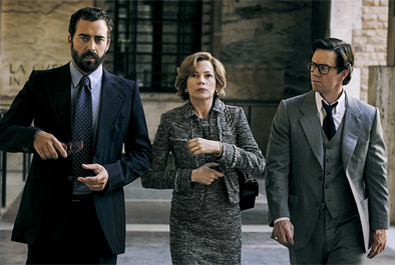
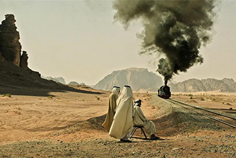
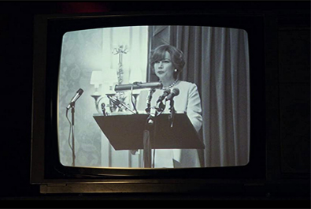
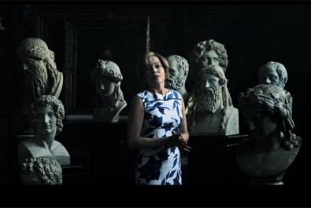
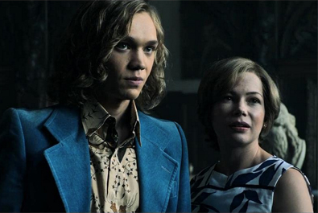

Dan Friedkin
Bradley Thomas
Quentin Curtis
Chris Clark
Ridley Scott
Mark Huffam
Kevin J. Walsh
David Scarpa
$57 million


Gail Harris, Getty III's mother
James Fletcher Chace
Oswald Hinge, Getty's attorney
John Paul Getty III (age 7)
Saverio Mammoliti
Il Tamia "Chipmunk", Getty III's abductor


In March 2017, it was reported that Ridley Scott was finalising plans to direct the David Scarpa-scripted All the Money in the World, a film about the kidnapping of John Paul Getty III. Scott stated that he was attracted to the project because of Scarpa's script, adding "I just consumed it ... I knew about the kidnapping, but this story was very, very provocative ... Gail Getty was an exceptional character, and there are many facets of the man Getty that make him a really great study. There's this great dynamic. It was like a play, and not a movie."
Principal photography began on 31 May 2017. Filming took place at Hatfield House in Hertfordshire and continued at Elveden Hall in Suffolk for a week at the end of July. The aristocratic Grade II-listed stately home was used to represent a Moroccan palace in a series of flashback scenes.
In late October 2017, numerous sexual misconduct allegations were made against Kevin Spacey, who had initially been cast as J. Paul Getty. The film's premiere at the AFI Fest in November and its Academy Awards campaign - which was initially to centre on Spacey's supporting role - was reworked. On 8 November, it was announced that although the film was otherwise ready for release, reshoots had been commissioned with Christopher Plummer replacing Spacey in the role of Getty. However Spacey still appears in one wide shot that would have been too expensive or complex to reshoot before the deadline; the scene features Getty disembarking from a train in the desert, but Spacey's face is not visible. Reshoots with Plummer ran from November 20 to 29, with the first footage of Plummer in the role released the same day they concluded. Reshoots cost $10 million, bringing the film's final production budget to $50 million. While it was initially reported that the actors had filmed the reshoots for free, it was later revealed that Wahlberg had in fact been paid $1.5 million while Williams received only $80 in per diems. Wahlberg's fee for the original shooting is alleged by The Hollywood Reporter to have been $5 million, while Williams is reported to have been paid $625,000.
On the review aggregator website 'Rotten Tomatoes', 79% of 259 reviews are positive, with an average rating of 7.0/10. The website's critical consensus reads, "All the Money in the World offers an absorbing portrayal of a true story, brought compellingly to life by a powerful performance from Christopher Plummer." Plummer was nominated as Best Supporting Actor at the 2018 Oscar awards, although losing out to Sam Rockwell for Three Billboards Outside Ebbing, Missouri. Ridley Scott was praised for his ability to create the film despite the Spacey controversy.

